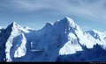
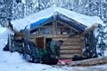
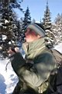

Просто так и ни о чем конкретно
- 2-3 февраля 2008 -
В общем в эти выходные собрались покататься сплошь знакомые и не знакомые лица. Знакомые - Лёха, Марина, Света и я. Незнакомое местное молодое поколение из Байкальска и Утулика - Серега Космонавт, Юра Зулик и Андрей (ну Серегу-то мы знали :). Я в этот раз решил взять видеокамеру и немного что-нибудь наснимать для истории. Еще я взял дурацкую привычку кашлять, которую надеялся излечить целебным горным воздухом, но фокус не удался и я раскашлялся еще больше. Вот в связи с этим у меня воспоминания об этих покатушках не очень хорошие, поэтому много писать не буду.

Катались из-под вершины Мамая в Северный цирк. Как кулуар точно называется, я не знаю, то ли "супер-дудка", то ли "турбина", надо бы придумать ему название. Главное, что снег там хороший был, отлично прокатились. Вот только я нифига не заснял, потому что не договорились как надо и все почти одновременно укатили. Еще клевые бы кадры получились на "могуле", куда мы попали выезжая из цирка, но где ж там кого поймаешь в лесу, все же кувыркались :) Ну а участок клевый, с кочками, мне понравилось.
Вечером в гости приходили Диана и Гоха, знакомые по Шерегешу. Опять не до здорового образа жизни было некоторым товарищам :) На следующий день мы со Светой пошли кататься по тропе до трассы, а все остальные, кто не болел и за больными не ухаживал, пошли катать Высокий цирк. Заодно установили с Лёхой рекорд радиосвязи - от учебки до ЛЭПки.
Фотографий катальных практически нет (если не считать Марину с сосулькой на носу :). Фотографии вечернего ужина и заснеженные елочки - пожалуй оставим в архиве. Так что остались только те, кто обычно за кадром :)


Сами себе фотографы - Лёха и Света
:)
Февраль 2008
Отчетик от Лёхи Слюдянского
Фотографии от Светы
Снегурочки